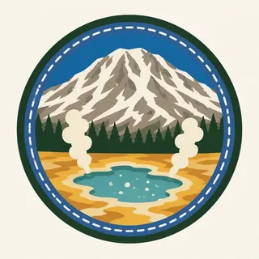

01
Lassen Peak
One of the largest plug dome volcanoes in the world, by the park's own description. The summit trail gains 1,957 feet from an 8,500-foot trailhead over a 5-mile round trip, rated strenuous.
TrailMark Archive Edition
California | Cascade Range
Lassen Peak and Cinder Cone became national monuments on May 6, 1907. Congress made them Lassen Volcanic National Park on August 9, 1916.
Archive No. TM-LAVO-050
National Park since 1916
Collection Cascade Range
Park Overview
Lassen Peak and Cinder Cone were separately proclaimed national monuments on May 6, 1907. Congress combined and upgraded them to Lassen Volcanic National Park on August 9, 1916.
The park's press kit gives it at 106,505 acres, about 74 percent of that, 79,062 acres, designated wilderness since October 19, 1972. It holds 172 miles of trail across 40 miles of paved and 23 miles of unpaved road.
NPS states that all four types of volcanoes found in the world, shield, composite, cinder cone, and plug dome, are represented within the park, a claim made about few other places on Earth.
Emotional Thesis
The header painting sets a snow-streaked plug dome over a blue lake, wildflowers in the foreground and hydrothermal pools steaming to the right. All three are real park features occupying the same general area, not a composite invented for the archive.
Lassen Peak last erupted May 19, 1915, within a century of the present. NPS notes recent activity also from Cinder Cone, about 350 years ago, and Lassen Peak, about 100 years ago, a volcanic field still considered active.
Landscape Highlights
01
One of the largest plug dome volcanoes in the world, by the park's own description. The summit trail gains 1,957 feet from an 8,500-foot trailhead over a 5-mile round trip, rated strenuous.
02
The largest hydrothermal area in the park, reached by a 3-mile round-trip trail that descends 300 feet into a basin of boiling pools, mudpots, and steam vents crossed by boardwalk.
03
Shield, composite, cinder cone, and plug dome volcanoes are all represented within the park, a combination NPS calls unusual for one protected area.
Wildlife
The park's press kit counts 300 vertebrate species and 805 confirmed vascular plant species across its geothermal and forested terrain. The extra drawing, a red fox crossing patches of snow, is the archive's image of the park's wildlife, not a count.
01
Wildflowers, visible near hydrothermal areas like the one in the header painting, follow the park's short high-elevation growing season.
02
Foxes and other mammals move between the park's forested and volcanic terrain as the season allows.
03
The 805-species plant count and 300-species vertebrate count are both from the park's own press kit, the closest thing to a statistics page found for Lassen.
Geology
NPS states plainly that Lassen represents all four types of volcanoes found in the world. Its hydrothermal system, fed by the same underlying heat, remains active at Bumpass Hell and elsewhere.
01
Lassen Peak, one of the largest plug dome volcanoes in the world, last erupted in 1915; Cinder Cone last erupted roughly 350 years ago.
02
The Lassen volcanic center hosts what NPS calls the most extensive hydrothermal system in the Cascade volcanic arc, with Bumpass Hell as its largest surface expression.
03
The park's elevation and trail figures come from its own hiking pages; a summit elevation is not stated outright on the pages opened for this essay, so none is given as a single number.
The main season for the Lassen Peak trail and full access to Bumpass Hell. Wildflowers bloom near the hydrothermal areas.
Snow begins returning to the higher trails; the main park road can close with the season's first storms.
Heavy snow closes most of the park road. Snowshoeing and cross-country skiing become the primary access at lower elevations.
Snowmelt can leave the Lassen Peak trail impassable well into the season; check current conditions before planning a summit attempt.
Photography
A snowy peak alone could be any Cascade mountain. The steam rising from a hydrothermal pool in the same frame is what marks this park as still volcanically active.
01
Bumpass Hell's vents against a snow-streaked Lassen Peak in the background captures the park's actual, specific pairing.
02
Photographing hydrothermal features means staying on marked trails and boardwalks; the ground beyond them is not always solid.
03
Yellowstone's geothermal scale is its own subject at a different order of magnitude. Lassen's basins are smaller and more contained.
Field Notes
The mountain last erupted within a photograph's reach of the present, and the ground still steams to prove the point.
TrailMark Field Notes

Badge Story
The badge fails if it is only a snowy mountain, indistinguishable from any Cascade peak. A visible thermal feature is what claims this park specifically.
Cool snow-blue peak against a warm rust-and-steam foreground.
A hydrothermal pool or vent, not just a lake, keeps the volcanic identity visible.
No geyser cone. Lassen's features are pools and mudpots, not Yellowstone-style geysers.
Archive No.050
LocationCascade Range
ReleaseVolcanic Mark
Stewardship / Safety
Hydrothermal areas are the park's central hazard. Elsewhere, elevation, snow, and a strenuous summit trail set the terms.
Stay on marked trails and boardwalks around every hydrothermal feature; the crust can hide boiling, acidic water or mud beneath a solid-looking surface.
Never touch hydrothermal water or mud; it is acidic and has caused severe injuries to visitors who left the trail.
The Lassen Peak trail is rated strenuous with real elevation gain; carry water and check conditions before attempting the summit.
The main park road closes seasonally with snow. Confirm current access with NPS before a visit outside summer.
Current conditions, fees, and alerts are on the National Park Service site.
Continue the Archive
Crater Lake is one collapsed volcano holding a single lake. Lassen is four different volcano types in one park, with a peak that erupted in 1915. Yellowstone is the geothermal park at a continental scale, for comparison.